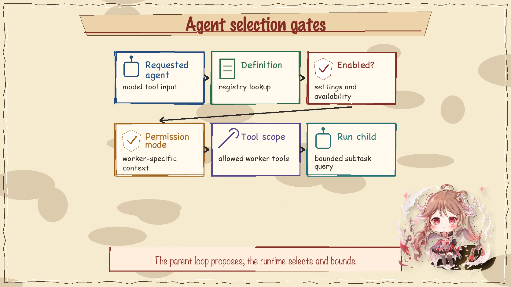
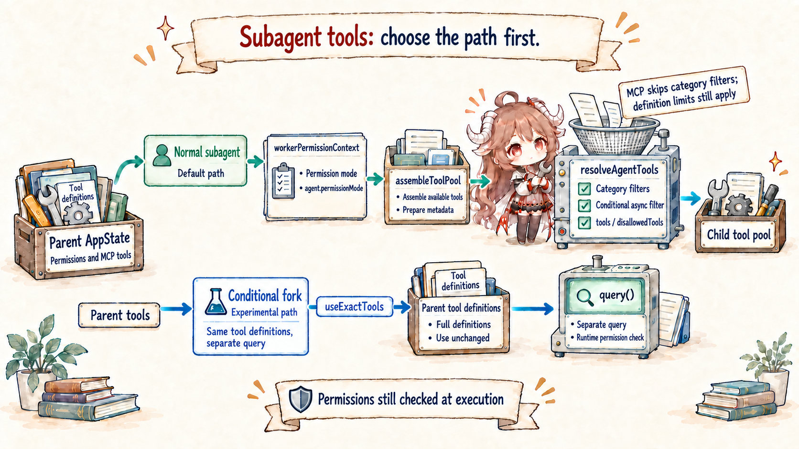
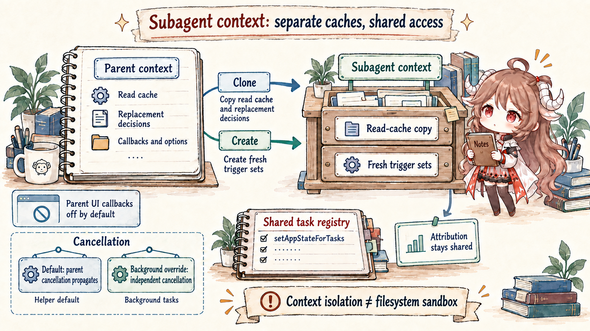

The AgentTool path starts when the model chooses to delegate work. That delegation is still a tool call from the parent loop's point of view. The interesting part is what happens after the tool call is accepted: Claude Code creates a worker context rather than giving the child unrestricted access to the parent's whole runtime.
AgentTool input
-> select agent definition
-> assembleToolPool() / resolveAgentTools()
-> createSubagentContext(parentContext, workerTools)
-> runAgent() // its own query loop
-> sidechain transcript + parent-visible result
fork path
-> reuse parent system/tools/messages prefix
-> append fork-only suffix1. Agent selection is gated
The runtime must decide which agent definition applies, whether that agent is available, and which tools it may use. This keeps delegation explicit. The model can request an agent, but the runtime selects and constrains the child task.
| Stage | What changes | Boundary protected |
|---|---|---|
| Model proposal | The parent loop emits an AgentTool input such as task prompt, requested subagent type, and optional model preference. | The child does not exist yet; this is still a parent tool_use proposal. |
| Runtime selection | Claude Code resolves the agent definition, availability, and allowed tool scope. | The model request cannot mint an unrestricted worker by naming one. |
| Worker context | The runtime narrows tools and creates a child context with its own query loop and sidechain transcript. | The child sees a projection of parent state, not the whole parent runtime. |
| Parent result | The child loop finishes and returns a bounded result to the parent as a tool result. | The parent receives an outcome, not ownership of the child transcript internals. |

2. Worker tools are rebuilt
A worker does not simply inherit the parent tool pool. The runtime builds worker tools from parent state, current permission mode, allow and deny lists, MCP tools, and agent-specific rules. This is why a subagent can be powerful while still being narrower than the parent session.

3. Normal subagents isolate context
The normal subagent path gives the child a new prompt and a focused task. It can include selected parent facts, but it is not just the parent chat with a different name. That isolation reduces prompt pressure and keeps the result easy to route back into the parent turn.

4. Fork path preserves a cache-stable prefix
The fork path is a special case. It mirrors the parent prefix more exactly so the child query can preserve cache behavior while adding a task-specific suffix. That suffix is consumed by the forked child request; it is not a new parent-conversation tail that later mainline turns should resume from. Forking reuses a request shape for economy, not because the child receives full authority over the parent runtime.

5. The invariant
A subagent is a bounded projection of work. The parent loop proposes delegation, the runtime chooses an agent, assembles a worker context, runs a child query, and returns a result. That path gives Claude Code parallel reasoning power without losing the parent session's governance boundaries.
Sources
The source-code claims in this article are based on the public mirror and the linked official documentation. Server-side behavior and private feature-gate policy are treated only as client-visible request shape.